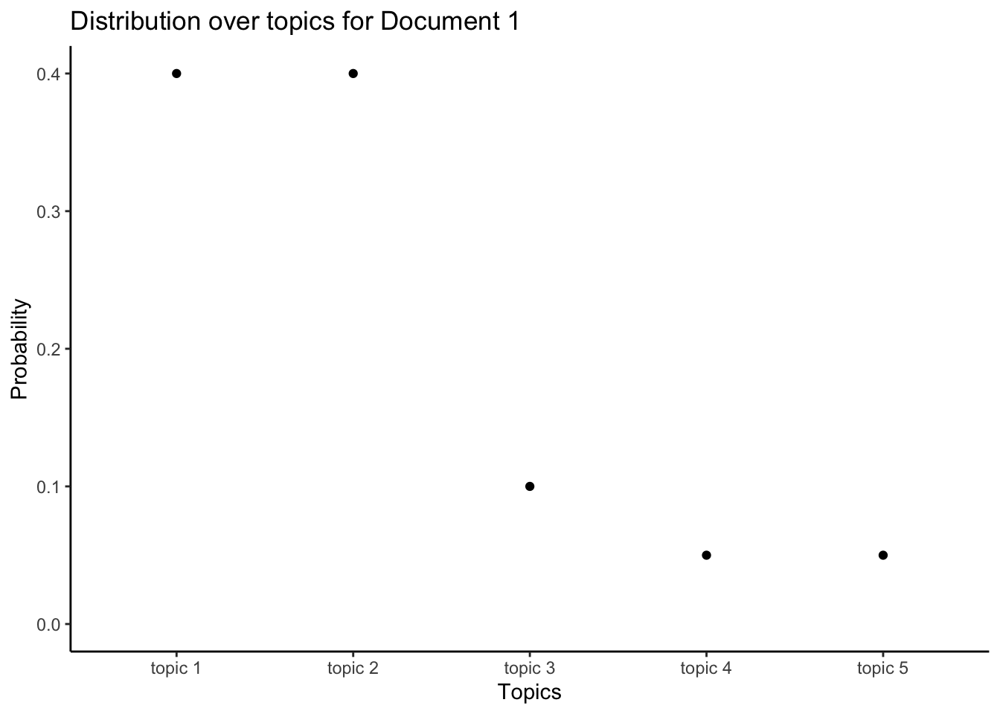
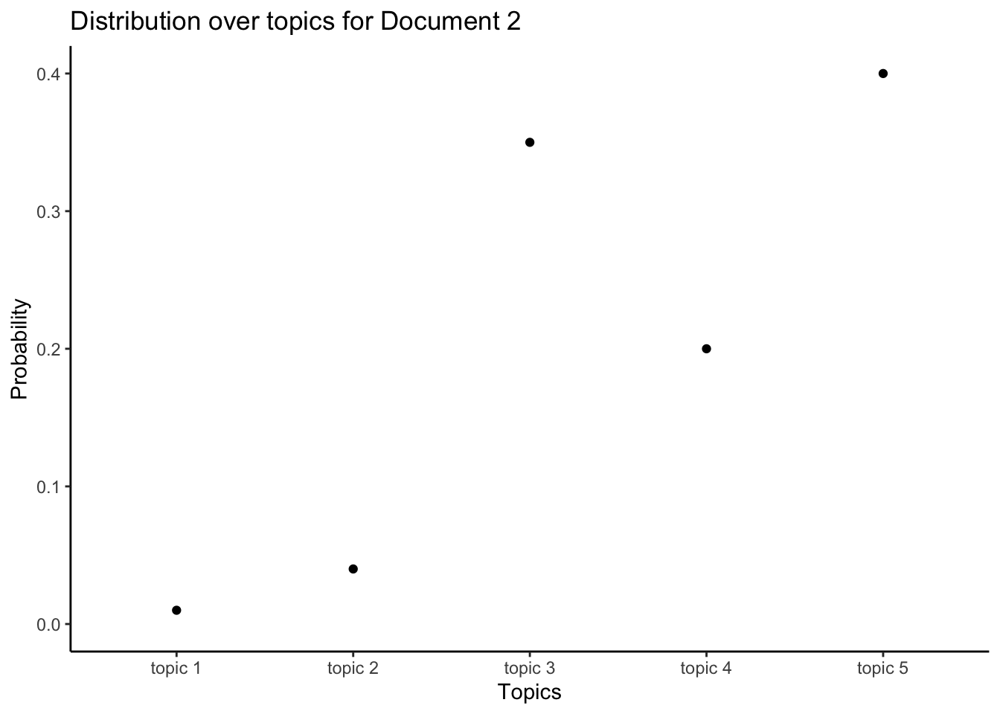
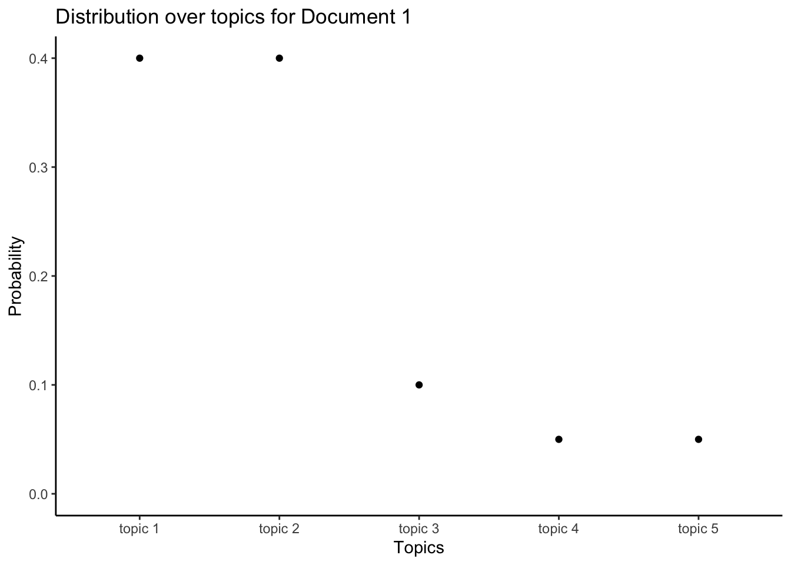
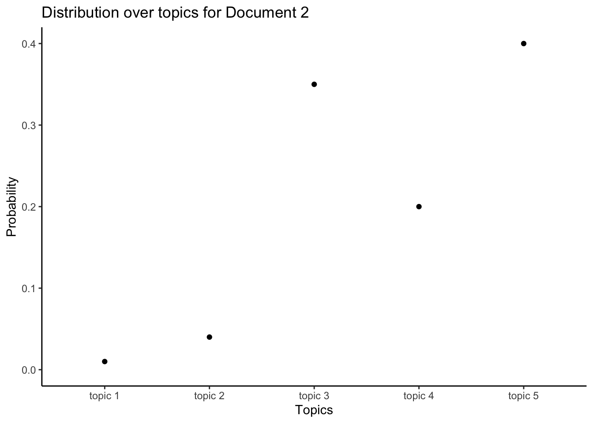
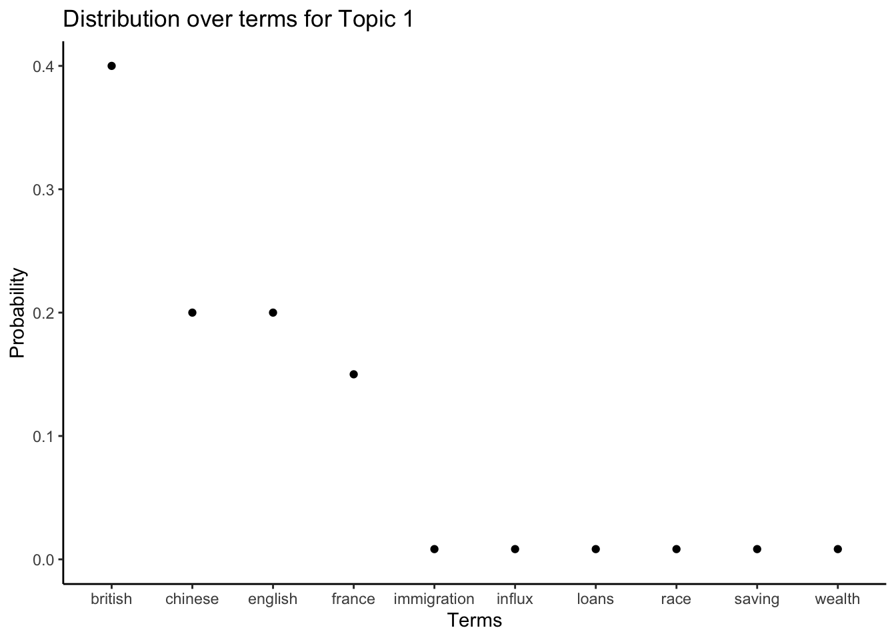
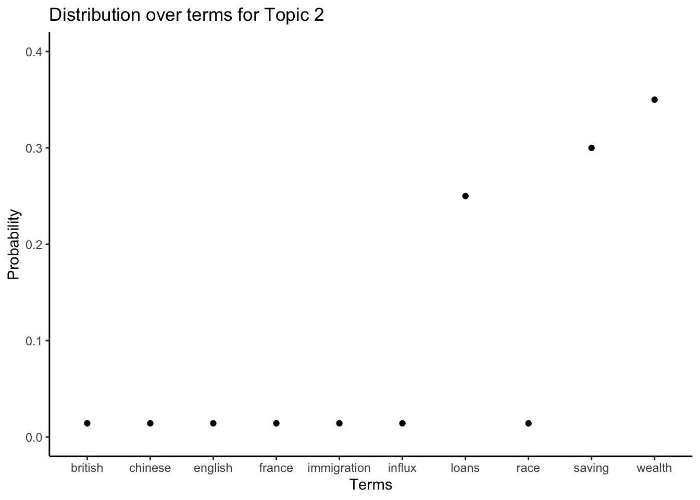

Each statement in Hansard needs to be classified by its topic. Sometimes Hansard includes titles that make the topic clear. But not every statement has a title and the titles do not always define topics in a well-defined and consistent way. One way to get consistent estimates of the topics of each statement in Hansard is to use the latent Dirichlet allocation (LDA) method of Blei, Ng, Jordan, Blei, Ng, and Jordan (2003), as implemented by the R package ‘topicmodels’ by Grun Grün and Hornik (2011).
Rohan Alexander
June 29, 2018
These are notes that I put together in the process of trying to understand how topic modelling works with a view to applying it to Australia’s Hansard. There are undoubtedly mistakes and aspects that are unclear. Please get in touch if you have any suggestions.
Each statement in Hansard needs to be classified by its topic. Sometimes Hansard includes titles that make the topic clear. But not every statement has a title and the titles do not always define topics in a well-defined and consistent way. One way to get consistent estimates of the topics of each statement in Hansard is to use the latent Dirichlet allocation (LDA) method of Blei, Ng, and Jordan (2003), as implemented by the R package ‘topicmodels’ by Grün and Hornik (2011).
The key assumption behind the LDA method is that each statement, ‘a document’, in Hansard is made by a speaker who decides the topics they would like to talk about in that document, and then chooses words, ‘terms’, that are appropriate to those topics. A topic could be thought of as a collection of terms, and a document as a collection of topics. The topics are not specified ex ante; they are an outcome of the method. Terms are not necessarily unique to a particular topic, and a document could be about more than one topic. This provides more flexibility than other approaches such as a strict word count method. The goal is to have the words found in Hansard group themselves to define topics.
As applied to Hansard, the LDA method considers each statement to be a result of a process where a politician first chooses the topics they want to speak about. After choosing the topics, the speaker then chooses appropriate words to use for each of those topics.
More generally, the LDA topic model works by considering each document as having been generated by some probability distribution over topics. For instance, if there were five topics and two documents, then the first document may be comprised mostly of the first few topics; the other document may be mostly about the final few topics (Figure @ref(fig:topicsoverdocuments)).


Similarly, each topic could be considered a probability distribution over terms. To choose the terms used in each document the speaker picks terms from each topic in the appropriate proportion. For instance, if there were ten terms, then one topic could be defined by giving more weight to terms related to immigration; and some other topic may give more weight to terms related to the economy (Figure @ref(fig:topicsoverterms)).


Following Blei and Lafferty (2009), Blei (2012) and Griffiths and Steyvers (2004), the process by which a document is generated is more formally considered to be:
Given this set-up, the joint distribution for the variables is (Blei (2012), p.6): \[p(\beta_{1:K}, \theta_{1:D}, z_{1:D, 1:N}, w_{1:D, 1:N}) = \prod^{K}_{i=1}p(\beta_i) \prod^{D}_{d=1}p(\theta_d) \left(\prod^N_{n=1}p(z_{d,n}|\theta_d)p\left(w_{d,n}|\beta_{1:K},z_{d,n}\right) \right).\]
Based on this document generation process the analysis problem, discussed in the next section, is to compute a posterior over \(\beta_{1:K}\) and \(\theta_{1:D}\), given \(w_{1:D, 1:N}\). This is intractable directly, but can be approximated (Griffiths and Steyvers (2004) and Blei (2012)).
After the documents are created, they are all that we have to analyse. The term usage in each document, \(w_{1:D, 1:N}\), is observed, but the topics are hidden, or ‘latent’. We do not know the topics of each document, nor how terms defined the topics. That is, we do not know the probability distributions of Figures @ref(fig:topicsoverdocuments) or @ref(fig:topicsoverterms). In a sense we are trying to reverse the document generation process – we have the terms and we would like to discover the topics.
If the earlier process around how the documents were generated is assumed and we observe the terms in each document, then we can obtain estimates of the topics (Steyvers and Griffiths (2006)). The outcomes of the LDA process are probability distributions and these define the topics. Each term will be given a probability of being a member of a particular topic, and each document will be given a probability of being about a particular topic. That is, we are trying to calculate the posterior distribution of the topics given the terms observed in each document (Blei (2012), p.7): \[p(\beta_{1:K}, \theta_{1:D}, z_{1:D, 1:N} | w_{1:D, 1:N}) = \frac{p\left(\beta_{1:K}, \theta_{1:D}, z_{1:D, 1:N}, w_{1:D, 1:N}\right)}{p(w_{1:D, 1:N})}.\]
The initial practical step when implementing LDA given a corpus of documents is to remove ‘stop words’. These are words that are common, but that don’t typically help to define topics. There is a general list of stop words such as: “a”; “a’s”; “able”; “about”; “above”… An additional list of words that are commonly found in Hansard, but likely don’t help define topics is added to the general list. These additions include words such as: “act”; “amendment”; “amount”; “australia”; “australian”; “bill”… A full list will be available in a follow up post going through an example with R code. We also remove punctuation and capitalisation. The documents need to then be transformed into a document-term-matrix. This is essentially a table with a column of the number of times each term appears in each document.
After the dataset is ready, the R package ‘topicmodels’ by Grün and Hornik (2011) can be used to implement LDA and approximate the posterior. It does this using Gibbs sampling or the variational expectation-maximization algorithm. Following Steyvers and Griffiths (2006) and Darling (2011), the Gibbs sampling process attempts to find a topic for a particular term in a particular document, given the topics of all other terms for all other documents. Broadly, it does this by first assigning every term in every document to a random topic, specified by Dirichlet priors with \(\alpha = \frac{50}{K}\) and \(\eta = 0.1\) (Steyvers and Griffiths (2006) recommends \(\eta = 0.01\)), where \(\alpha\) refers to the distribution over topics and \(\eta\) refers to the distribution over terms (Grün and Hornik (2011), p.7). It then selects a particular term in a particular document and assigns it to a new topic based on the conditional distribution where the topics for all other terms in all documents are taken as given (Grün and Hornik (2011), p.6): \[p(z_{d, n}=k | w_{1:D, 1:N}, z'_{d, n}) \propto \frac{\lambda'_{n\rightarrow k}+\eta}{\lambda'_{.\rightarrow k}+V\eta} \frac{\lambda'^{(d)}_{n\rightarrow k}+\alpha}{\lambda'^{(d)}_{-i}+K\alpha} \] where \(z'_{d, n}\) refers to all other topic assignments; \(\lambda'_{n\rightarrow k}\) is a count of how many other times that term has been assigned to topic \(k\); \(\lambda'_{.\rightarrow k}\) is a count of how many other times that any term has been assigned to topic \(k\); \(\lambda'^{(d)}_{n\rightarrow k}\) is a count of how many other times that term has been assigned to topic \(k\) in that particular document; and \(\lambda'^{(d)}_{-i}\) is a count of how many other times that term has been assigned in that document. Once \(z_{d,n}\) has been estimated, then estimates for the distribution of words into topics and topics into documents can be backed out.
This conditional distribution assigns topics depending on how often a term has been assigned to that topic previously, and how common the topic is in that document (Steyvers and Griffiths (2006)). The initial random allocation of topics means that the results of early passes through the corpus of document are poor, but given enough time the algorithm converges to an appropriate estimate.
The choice of the number of topics, k, affects the results, and must be specified a priori. If there is a strong reason for a particular number, then this can be used. Otherwise, one way to choose an appropriate number is to use a test and training set process. Essentially, this means running the process on a variety of possible values for k and then picking an appropriate value that performs well.
One weakness of the LDA method is that it considers a ‘bag of words’ where the order of those words does not matter (Blei (2012)). It is possible to extend the model to reduce the impact of the bag-of-words assumption and add conditionality to word order. Additionally, alternatives to the Dirichlet distribution can be used to extend the model to allow for correlation. For instance, in Hansard topics related the army may be expected to be more commonly found with topics related to the navy, but less commonly with topics related to banking.
The Dirichlet distribution is a variation of the beta distribution that is commonly used as a prior for categorical and multinomial variables. If there are just two categories, then the Dirichlet and the beta distributions are the same. In the special case of a symmetric Dirichlet distribution, \(\eta=1\), it is equivalent to a uniform distribution. If \(\eta<1\), then the distribution is sparse and concentrated on a smaller number of the values, and this number decreases as \(\eta\) decreases. A hyperparameter is a parameter of a prior distribution.↩︎